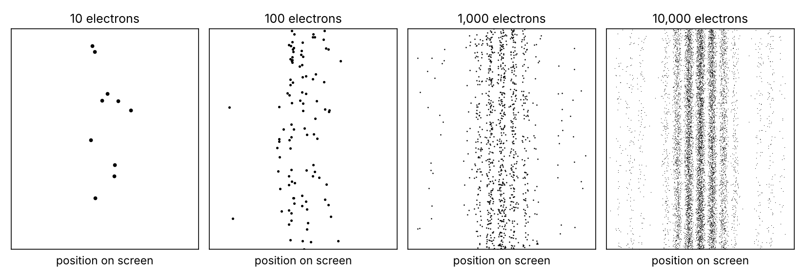

Quantum mechanics is the physics of matter and light, and chemistry, materials, transistors and lasers all rest on it. Its effects are most obvious at the scale of atoms and below, and the quickest way to see what it is about is one experiment: fire electrons at a wall with two narrow slits, one electron at a time, and record where each one lands.
The set-up. An electron source, a wall with two narrow slits, and a screen that registers each arrival. Electrons are sent so rarely that each has almost always landed before the next one leaves; this has been done for real, with an electron "biprism" (which acts as two slits) in 1976 and 1989, and with actual slits in 2013. Idealizations: one electron speed; a screen far enough away that the pattern no longer changes shape with distance; slits narrower than their spacing.
What is seen. (1) Each electron makes one whole dot, at a spot nobody can predict in advance. (2) After thousands of electrons the dots form bright and dark stripes; faster electrons give narrower stripes.

(3) Cover one slit: no fine stripes, just a wide bright band in the middle with much fainter bands further out. At the dark stripes near the middle, where with both slits open almost no electrons land (none in the ideal set-up), electrons now land. Opening a second slit took hits away. (The one-slit band is centred behind the open slit, but on a far screen it is enormously wider than the gap between the slits: in the 2013 experiment's sizes, with a screen 1 m away, the band is about 1.6 mm wide and its centre sits 0.136 µm from the middle, under a thousandth of a stripe spacing. So on the screen, "behind the open slit" and "the middle" are the same place. On a screen very close to the slits you would instead see a band behind each open slit; the figure after next shows how one picture turns into the other.)
![Relative chance of landing at each position, in units of the stripe spacing, for the ideal set-up with the slits four times further apart than they are wide. Thin grey: one slit open (its true centre, behind the open slit, is offset from the middle by far less than the line width, so it is drawn at the middle). Dashed: what you would get if each electron simply used one slit or the other, the two one-slit chances adding. Bold: what is seen with both slits open. At the arrows, the dark stripes near the middle, the bold curve is zero while the one-slit curve is well above zero (open circles): opening the second slit made those spots unreachable. The inset stretches the vertical scale to show the faint one-slit side bands, and the spot at X = 4, which is dark with one slit and with both because the one-slit pattern itself has a gap there.](figures/a-one-vs-both.png)
Why a far screen. What you see depends on how far away the screen is. Close to the slits, each open slit gives its own band right behind it, as straight-flying particles would, and the two bands barely overlap. There are only small ripples on the bands and faint stripes in the dim gap between them, and no spot where opening the second slit clearly takes hits away. Further away, each band spreads out, and where the two overlap, strong stripes appear; at the darkest of them, opening the second slit already cuts the hits by about 90%, though not to zero. Far away, the bands overlap completely, the pattern stops changing shape as you move the screen, and the dark stripes near the middle reach zero. That is the set-up the real experiments use and the one the figures above show. One number decides which case you are in: the slit separation squared, divided by wavelength × screen distance. Much larger than 1 means close; much smaller than 1 means far.
![How the two-slit pattern changes with screen distance, for the same slits as above (each panel is scaled to its own peak, and the horizontal ranges differ). Bold: both slits open; thin grey: left slit only; black bars: the slits. Top, close screen: each band sits behind its own slit and barely reaches the other; there are small ripples on the bands and faint stripes in the gap, at most 12% of the peak. Middle: the bands have spread and overlap; strong stripes in the middle, weaker ones where mainly one band reaches, and stripes again at the faint outer edges. Bottom, far screen: the bands overlap completely and stripes fill the pattern, the same shape as the figure above, with faint side bands beyond ±4 stripe spacings (under 5% of the peak); the slits are too close together to separate at this scale.](figures/a-three-distances.png)
A which-slit record. Add anything that leaves a physical trace of which slit each electron used, whether anyone reads it or not. Seen: with a trace that tells the slits apart for certain, the stripes are gone and the pattern is, ideally, the two one-slit patterns added; a trace that only partly tells them apart only partly fades the stripes. (Done with atoms and photons, and for electrons in a tiny circuit.)
What this rules out. Tiny balls flying straight would give two bands, one behind each slit; balls also bouncing off the slit edges, wider bands that might merge. Either way each ball uses one slit, so a second slit could only add hits, and (3) shows it took hits away. A classical wave, like water, gives stripes but arrives everywhere, continuously: dim the source and the whole screen gets a fainter splash, never one whole dot; (1) kills that. Electrons jostling each other: killed by sending them one at a time. One picture in which the electron does have a definite path survives: a particle steered by a wave, the pilot-wave model below.
Model 1: the wave function. The theory gives the electron an amplitude at every point: a number that can be positive or negative (in the full theory a small clock hand, a complex number). It spreads from the source like a ripple, with the Schrödinger equation as the rule for how it changes in time, passes through both slits, and the two parts overlap on the screen; the chance of a dot near a spot is proportional to the squared size of the total amplitude there. Say each slit alone sends an amplitude of 1 to some spot, in relative units: alike, the total is 2 and the chance 4; opposite, +1 and −1, the total is 0 and nothing lands. Adding chances instead would give 2 either way.
Why this model: chances can't cancel, and spots reachable with one slit but not with two need something that can cancel, combined first and squared after. The ripple's wavelength is set by the electron's speed (faster, shorter), which gives the stripe spacing, and the same rule applied to hydrogen predicts the colours it emits. Pros: the workhorse for atoms, molecules and solids; between measurements the equation is fully deterministic. Cons: for several electrons the amplitude lives in a space with three dimensions per particle, not ordinary space, which is hard to picture and costly to compute; and "one whole dot, with these chances" is an added rule, not something the ripple equation itself delivers. And unlike a water wave, it is not an electron smeared out that you could catch in pieces: you never detect part of an electron. Whether the wave is itself something real is one of the questions the interpretations below answer differently.
Model 2: a sum over paths. Pick a spot. Give every route from source to spot a small clock hand whose angle is set by the route's length (for electrons all at one speed), add the hands tip to tail, and the chance is the squared length of the total. Combine all routes through the left slit into one hand and all through the right into another: alike, bright; opposite, dark.
Why this model: it is the same theory as the Schrödinger equation in different mathematics (Feynman, 1948), so it predicts nothing new; you use it when it is easier to think with. Pros: for a heavy object the hands for routes near the classical path line up and the rest cancel, so only routes very close to it matter, one reason the everyday world looks classical; and it is the main tool of particle physics. Cons: clumsy for electrons bound in atoms, and "the electron takes every path" is a slogan, not something the method says.
What happens in between? Both models treat the record the same way, and the reason it kills the stripes is this: two parts of the amplitude can only cancel where they end in the same final situation. Without a record, "dot here by way of the left slit" and "dot here by way of the right slit" end in the same situation, a dot here, so they meet and can cancel. A record ties each part to a different state of the recorder, so now they end in different situations, "dot here, recorder says left" and "dot here, recorder says right". When the recorder's two states can be told apart perfectly, the parts can't cancel and their chances just add; when they can be told apart only partly, the parts partly cancel and fainter stripes survive. Neither model says what one electron does between slits and dot. Here the mainstream views part ways: three interpretations that predict exactly the same as each other for everything above, and one proposal that changes the equation slightly.
Copenhagen-style. The wave function is a tool for predicting; the dot is the result; "which slit?" has no answer the theory gives, and a record changes what can be predicted. Pro: minimal, and how working physicists talk. Con: critics object that it never says what counts as a record.
Many-worlds. The wave function is everything and never collapses: at the screen, electron and screen become one joint state with a branch for each place the dot could be, and we, in one branch, see one dot. Pro: no collapse rule. Con: critics object that if every outcome happens it is unclear what the chances mean; supporters reply that this is just the ripple equation taken seriously.
Pilot-wave. The electron always has a definite position and is steered by a wave that passes through both slits: it goes through one slit on a definite bent path, kept away from the dark lines, and chance comes only from not knowing its exact starting point. Pro: a clear picture with nothing vague about the dot. Con: for several particles the steering acts instantly across any distance, and its extension to light and high-energy physics is less settled; critics call the paths unobservable extra structure.
Objective collapse. The ripple is real and localizes itself at random: extremely rarely for one electron, so the stripes form as usual, but almost at once for the vast number of particles the arrival sets in motion in the screen, which is where the single dot comes from. Pro: a definite mechanism with consequences that can be tested. Con: new constants of nature, and its small predicted departures from standard quantum mechanics (fainter stripes for very large objects, a faint warming and faint radiation from ordinary matter) have been searched for and not found so far, which has ruled out some versions and narrowed the room for the rest.
How they relate. The wave function and the sum over paths are one theory in two sets of clothes: they always agree, and convenience decides. Copenhagen-style, many-worlds and pilot-wave are readings of that one theory: they agree on every count here, and no experiment has ever told them apart, so taste and economy decide; the question is open. Objective collapse is a slightly different theory: for one electron the difference is far too small to see, it grows with the amount of matter involved, and experiments keep narrowing the room for it.
So quantum mechanics is about this: matter and light arrive in whole lumps; where each lands can only be given as chances; the chances come from amplitudes that add and cancel; and a reliable physical record of a route stops its amplitude from cancelling the other's. The same amplitude rule, plus one rule about identical particles (two electrons can never share one state, which is why an atom's electrons fill level after level instead of all sinking to the lowest; photons can pile into one state, which a laser exploits), is the physics behind atoms, chemical bonds, transistors and lasers. A dust grain shows no stripes in practice for two reasons: its wavelength is so tiny that its stripes would be far too fine to resolve, and air and light constantly record its position, which washes out the cancelling (physicists call this decoherence).
Check yourself: At one of the dark stripes near the middle of the screen, a spot that stays dark when both slits are open, what happens if you cover one slit: do electrons start landing there, or does it stay dark?